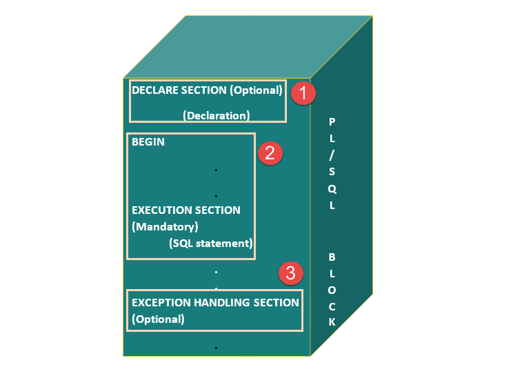
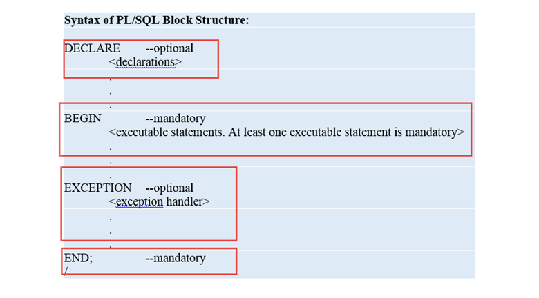
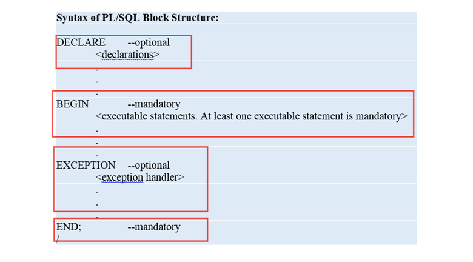

PL/SQL block
~PL/SQL, the code is not executed in single line format, but it is always executed by grouping the code into a single element called Blocks. In this tutorial, you are going to learn about these blocks.
~Blocks contain both PL/SQL as well as SQL instruction. All these instruction will be executed as a whole rather than executing a single instruction at a time.
Block Structure
PL/SQL blocks have a pre-defined structure in which the code is to be grouped. Below are different sections of PL/SQL blocks.
1.Declaration section
2.Execution section
3.Exception-Handling section
The below picture illustrates the different PL/SQL block and their section order.

Declaration Section
This is the first section of the PL/SQL blocks. This section is an optional part.
This is the section in which the declaration of variables, cursors, exceptions, subprograms, pragma instructions and collections that are
needed in the block will be declared. Below are few more characteristics of this part.
~This particular section is optional and can be skipped if no declarations are needed.
~This should be the first section in a PL/SQL block, if present.
~This section starts with the keyword ‘DECLARE’ for triggers and anonymous block. For other subprograms, this keyword will not be present. Instead, the part after the subprogram name definition marks the declaration section.
~This section should always be followed by execution section.
Execution Section
Execution part is the main and mandatory part which actually executes the code that is written inside it. Since the PL/SQL expects the executable statements from this block this cannot be an empty block, i.e.,
it should have at least one valid executable code line in it. Below are few more characteristics of this part.
~This can contain both PL/SQL code and SQL code.
~This can contain one or many blocks inside it as a nested block.
~This section starts with the keyword ‘BEGIN’.
~This section should be followed either by ‘END’ or Exception-Handling section (if present)
Exception-Handling Section:
The exception is unavoidable in the program which occurs at run-time and to handle this Oracle has provided an Exception-handling section in blocks.
This section can also contain PL/SQL statements. This is an optional section of the PL/SQL blocks.
~This is the section where the exception raised in the execution block is handled.
~This section is the last part of the PL/SQL block.
~Control from this section can never return to the execution block.
~This section starts with the keyword ‘EXCEPTION’.
~This section should always be followed by the keyword ‘END’.
PL/SQL Block Syntax

~This should be the first section in a PL/SQL block, if present.
~This section starts with the keyword ‘DECLARE’ for triggers and anonymous block. For other subprograms, this keyword will not be present. Instead, the part after the subprogram name definition marks the declaration section.
~This section should always be followed by execution section.
Execution Section
Execution part is the main and mandatory part which actually executes the code that is written inside it. Since the PL/SQL expects the executable statements from this block this cannot be an empty block, i.e., it should have at least one valid executable code line in it. Below are few more characteristics of this part.
~This can contain both PL/SQL code and SQL code.
~This can contain one or many blocks inside it as a nested block.
~This section starts with the keyword ‘BEGIN’.
~This section should be followed either by ‘END’ or Exception-Handling section (if present)
Exception-Handling Section:
The exception is unavoidable in the program which occurs at run-time and to handle this Oracle has provided an Exception-handling section in blocks. This section can also contain PL/SQL statements. This is an optional section of the PL/SQL blocks.
~This is the section where the exception raised in the execution block is handled.
~This section is the last part of the PL/SQL block.
~Control from this section can never return to the execution block.
~This section starts with the keyword ‘EXCEPTION’.
~This section should always be followed by the keyword ‘END’.
PL/SQL Block Syntax
